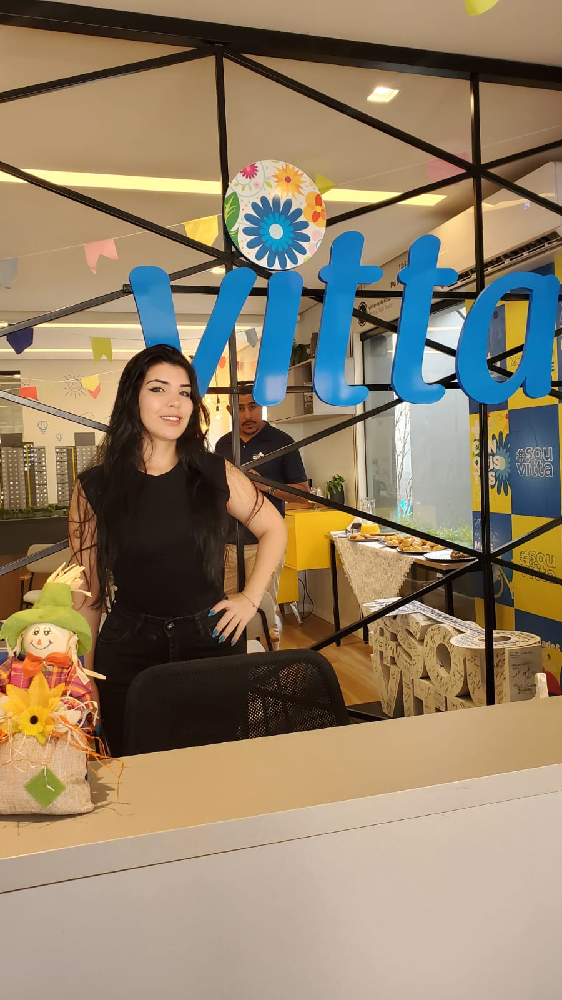

Habilidades
- Atendimento ao cliente e resolução de problemas
- Comunicação e relacionamento interpessoal
- Organização de eventos e ações promocionais
- Desenvolvimento HTML, CSS e JavaScript
Experiências
- Promotora de Eventos- Atuação na organização e divulgação de eventos e marcas, incluindo panfletagem, demonstração e degustação de produtos em supermercados. Experiência na recepção e atendimento ao cliente em imobiliárias e diversos estabelecimentos, garantindo uma abordagem profissional e engajadora.
- Paschoalotto (2024) – Realização de pesquisas de satisfação para avaliar a qualidade do atendimento e identificar oportunidades de melhoria. Responsável pelo auxílio na resolução de problemas e reclamações de clientes, buscando soluções eficazes e satisfatórias. Experiência no atendimento por múltiplos canais de comunicação, incluindo redes sociais e chats de suporte. Destaque pelos melhores feedbacks de atendimento.
Estudos
Lógica de programação: explore funções e listas - Alura Cursos Certificado
Lógica de programação: mergulhe em programação com JavaScript - Alura Cursos Certificado
HTML e CSS: ambientes de desenvolvimento, estrutura de arquivos e tags - Alura Cursos Certificado
HTML e CSS: Classes, posicionamento e Flexbox - Alura Cursos Certificado
HTML e CSS: cabeçalho, footer e variáveis CSS
- Alura Cursos Certificado
